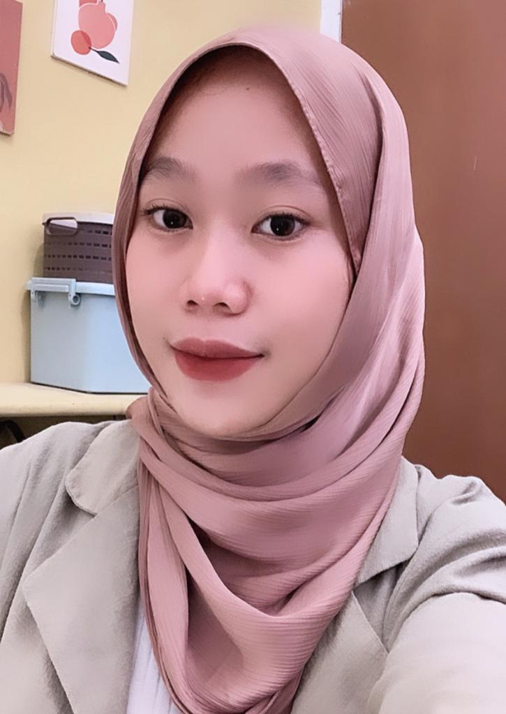

Foto profil
Deskripsi Diri
Saya adalah lulusan dari SMKS Mahaputra Cerdas Utama dengan keahlian yang dikuasai yaitu Adobe Photoshop, Adobe Ilustrator, Microsoft office, Google Workspace, Corel draw. Memiliki ketertarikan untuk mengembangkan keterampilan di bidang desain dan marketing. Saya adalah individu yang memotivasi diri sendiri dengan hasrat untuk terus belajar. Saya berkembang dalam lingkungan yang menantang dan senang mengerjakan proyek yang membutuhkan pemikiran kreatif dan keterampilan memecahkan masalah.
Biodata
Nama : Kania Ramadani
Tempat, Tanggal Lahir : Bandung, 1 Desember 2002
Alamat : Kp. Patrol Ds. Sukamukti Kec. Katapang Kabn. Bandung
Universitas : International Women University
Prodi : Informatika